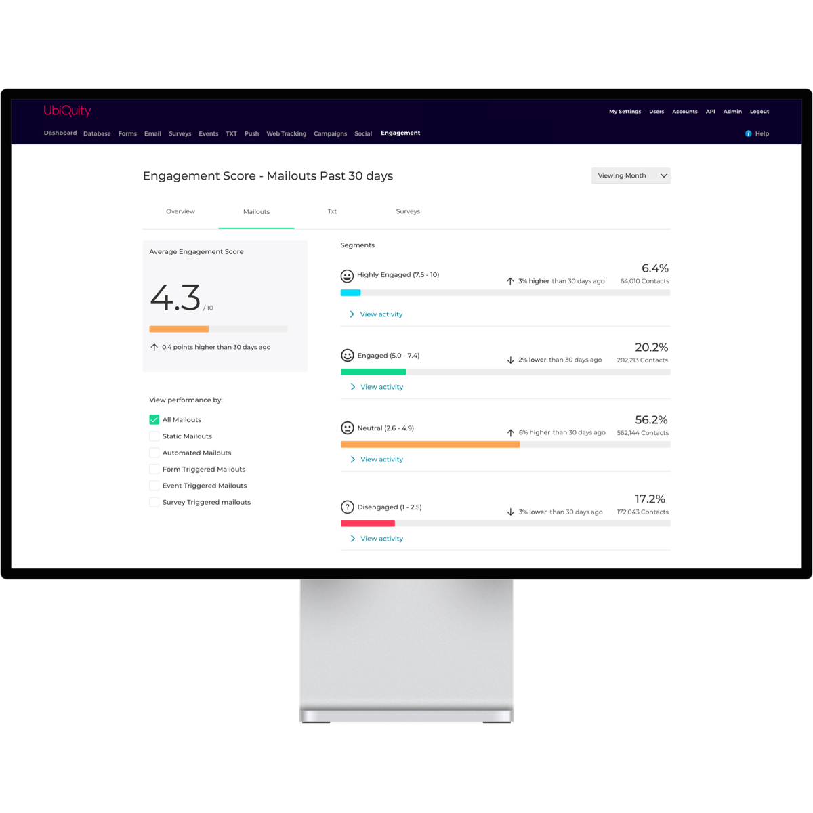

UbiQuity
Marketing Automation
Product Design + Design Systems
July 2017 → January 2019
UbiQuity is a marketing automation platform. It sends over a billion emails, texts, push notifications, forms, surveys, event invites, chatbot messages, etc every year to customers, on behalf of companies you interact with daily.
I implemented new processes, and worked on a new design system to
improve a legacy platform in a product team of design, dev, test,
and product humans.
I also led the design of new features, and
usability improvements.

Scope of work
Design & Research
User Research, Functional Specifications, Design Sprints, Interaction Design, Interface Design, Visual Design, Usability Testing, Data Visualization.
Marketing
Marketing Automation, Onboarding Tutorial Videos, Graphic Design, Print & Collateral

Digital Asset Management
(Images for emails, attached PDFs, etc etc)


Marketing Engagement Dashboard
(Measuring email performance and acting upon that info)
Challenges
In July 2017, the company I worked for acquired a
marketing automation
platform called Ubiquity. As a team, we had to contend with the
legacy of many tacked-on features created through a history of
sales-driven development.
The app came with about 10 years of unpaid
technical debt, and product development had slowed to a crawl. It was also
initially challenged by an
inconsistent design language, making it difficult to
onboard
new users.
It was a strategic crossfire. The platform wasn't mature enough to
compete with
Adobe Experience Cloud
or Marketo,
and it was too complex to compete with small business marketing
offerings like
MailChimp and
CampaignMonitor.
We also had to compete with the fact that the
revenue generated from
managed services
(ie: our company operates the platform for you) meant that there
was a stronger business case for feature development over
refactoring
the platform.
Our Filter Builder feature enabled marketers to write complex triggers for transactional emails and text messages, without needing to know how to use databases like SQL.
A partial example of filtering options that are part of our database
filter builder.
I worked on usability and user flow
improvements to this feature.
Response

Tagging functionality that helped users organise, and benchmark marketing comms across campaigns, channels, and tags.
Discovery
We took stock of every feature, and listened to users to identify
weak points on the platform. In response, we made usability
improvements to features, and increased
system usability scores
from an X average to a Y average (n=12)
Design Version Control
To track changes over hundreds of features, I transitioned asset
management from a file server, to a design version control tool
called
Abstract.
This resulted in immeasurable productivity improvements doing admin
and dev handover.
Exploration & Feature Specification
Informed by our user research and usability testing, we specified
out feature improvements and usability fixes that were
simultaneously turned into design briefs and developer tickets. I
took point on some of these improvements.
I put together an abridged sitemap of the platform with hundreds of
unique templated pages and modals, each with multiple different
CRUD operations
to manage both communications, and users.
Click the image for a full copy.
Analytics
I led the design of a marketing engagement dashboard on the Ubiquity
platform. All campaign data was processed into a single dashboard, to
make it easier to understand performance across all customer
marketing efforts.
It also became much easier to target consumers by engagement using
this data.
ie: Automated targeting of disengaged customers with discounts
and offers.

Tagging
I designed a tagging system that helped clients categorise comms across channels and campaigns. Customers used the feature to make it easier to organise marketing comms, and it saw use as a performance optimisation tool.
ie: tagging groups of emails or text messages that included a cute puppy, or kitten, and benchmarking whether puppies or kittens performed better across channels and campaigns.
Media Manager
I Improved a file manager that made it easier for clients to select assets when designing emails.
ie: SPCA selecting a PDF adoption form to attach to automated puppy adoption mailouts
Team
Design: Gavin Cammell, Walter Lim
Development: David Yang, Shanon Jackson, Ricky Hopkins
Product: Marija Stulich, Jonathan Ng
Test: Jing Bai, Mohini Singh